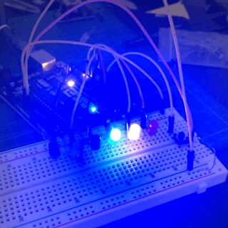
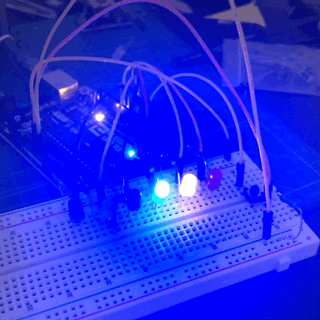

Mr Bookmark
Mr Bookmark is a popup bookmarks. I'm personally interested in the origami. Especially the type of origami which is able to pop up by folding. We can see it variously used in some creative graphic design books.


Conceptualization
Instead of just make this interesting origami exist in the certain graphic design books. I came up with an idea to make it as a bookmarks. So that every times readers open the books they can have this kind of paper based sculpture pop up on the book!
Development
a. Prototypes
At first I decide the direction of folding bookmarks. Since it is too abstract to think about the perspective. I start to make some prototypes to help myself. Then I realized that I want to make the figure face directly to the users. So the book mark need to be fold start from the side of the book. Then I try to add a origami as a figure pop up on the book by folding
b. Sketch
After Trying some origami figure, I tend to give up the idea of making origami as a figure. Because origami itself is thick. If you fold it equally. It will get twice thicker. It is really inconvenient to fold for the users. So I start to try draw a figure by hand on a paper. Then cut it as a plat figure. I want the figure looks funny but not disturb users. Because every time they see it is the time they want to clam down and read book. So I just draw a very simple figure with just line and circle. And I call it Mr Bookmark.
Final
This is how it look like. I also fold a handle at the edges of the bookmarks so that the users can open the book with the book mark easier.
Neon
This is a project combine with Arduino. I'm a begxiner of Arduino. I want to utilize the knowledge I've learned so far to create controllable neon light on the breadboard.
Conceptualization
I just learned about control a single unit of LED on the circuit. I can also control the LED's light pattern by code in Arduino IDE. NEON can be considered as a scheme of LED. And light in a certain programmable pattern. So maybe I can add more LED on the breadboard to make them as a scheme of LED. Then look for some way to control them the light patter of the scheme.
Development
a. Scheme of led
At first, I try to connect three LED with just on pin port. When can get the circuit connect, I just found that didn't work. It seems like the power is not be able to afford three LED at the same time. Then I confirm this assumation by connect just two LED together
Then I decide to connect the LED directly with different pin. That means I need to enable more pin as output in the code and have more resistors with the LED. Then It work!
b. Circuit for switches
I want to have switch to turn on and turn off the scheme of light. Then I need to have an additional pin to receive the sign of switch, so that I can change the state of light scheme accordingly. I decide to us pull down switch to achieve this function. I add a additional helper circuit for the switch.
c. Code
To Control the pattern of LED's light. I wrote a method to give the power from the pin at different time. I use a counter to count the pin to give the power to LED. It start from the highest index of pin to the lower. And I use a flag boolean to decide the direction of light. Each time when the index reach the smallest one or largest one. The flag boolean will flip to the oppsite value. So that the Neon light will be able to go back and forth. Just like that.
 

Final
Finally I make it can be turn on and turn off with switch. Then I also add another method which can change the light patter automatically while the switch is on.